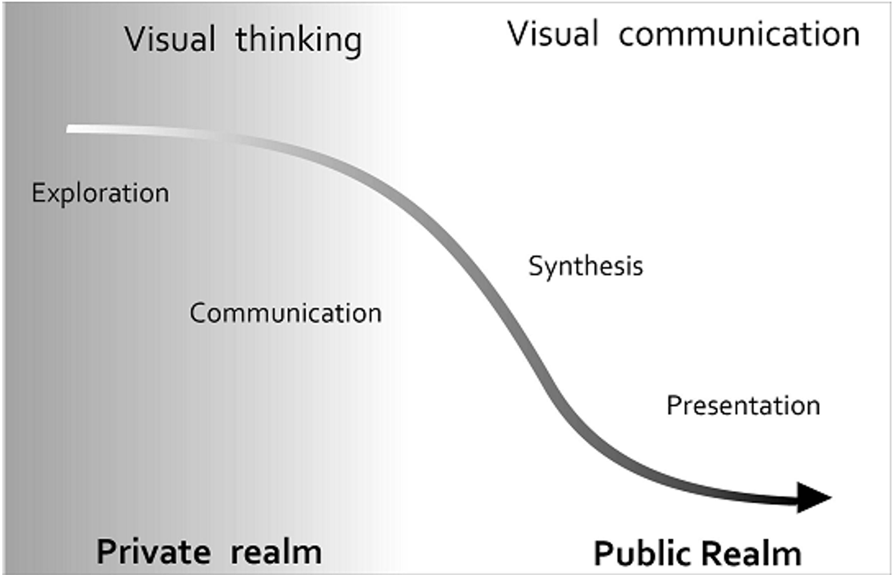

Introduction to Spatial Data Science
Acknowledge
- Dr. Elisabetta Pietrostefani &
- Dr. Carmen Cabrera-Arnau
A course in Geographic Data Science
SCTIMST, Trivandrum
- Sree Chitra Tirunal Institute for Medical Sciences & Technology, Trivandrum
- An Institution of National Importance established by the Act of the Indian Parliament (Act No.52, 1980)
Dept. of Science & Technology
Three major focus areas
- Bio-Medical Technology Wing
- Super specialty Hospital
- Public Health (AMCHSS)
Healthcare Technology development
inter-disciplinary initiatives
Running MPH program since 1997, PhD programs since 2003
Introduction
- Public Health - Science vs. Advocacy
- The need for participatory decision making in public health
- The transparency of open data science approach
- The beauty of computational reports, presentations, etc.
Work plan
Lectures
- Essential concepts
- Mainly to get the big picture
- Enthusing interest rather than teaching
- Welcome to the open data science initiative!
Lab work
- Do it yourself
- Get skilled in the process
- Come out of your comfort zones and collaborate!
- Use data for dialogue!
What information does GIS use?
Data that defines geographical features like roads, rivers
Soil types, land use, elevation
Demographics, socioeconomic attributes
Environmental, climate, air-quality
Annotations that label features and places
What is Spatial Data Science?
Spatial Data Science
- Analyse and extract insights from geospatial data
- Work with real-world data on a number of domains and problems
- Acquire key data science skills and important tools to answer spatial questions
It is especially true in public health
GIS
Layers - Image - Data
GIS world vs. Real World
Skills for public health data science
Hard Skills - Programming Language - Transparency and Reproducibility - Version control
Soft Skills - Communication - Storytelling - Geospatial analytics acumen - Ethical skills
R software for Spatial Data Science (SDS)
Graphical User Interfaces (GUIs)
- QGIS and GRASS has revolutionized Open source Spatial Information Systems (GIS).
- However, the reproducibility aspect has many challenges
Command Line Interfaces (CLIs)
Command Line Interface (CLIs) of R software is a good way to bring in reproducible algorithms for GIS/SDS
The Spatial Data ‘Revolution’
Advanced Hardware: High-performance computer hardware and efficient algorithms allow us to process vast data sets quickly.
Scalable Software: Scalable solutions with the R environment help us to sift through the data deluge, and extract valuable insights from the noise.
Spatial Databases: The advent of spatial databases empowers us to store and manipulate manageable subsets within the vast ocean of spatial data.
SDS in Public Health
- Data Science:“gathering data messaging it into a tractable form, making it tell its story and presenting that story to others”
Loukides (2011) What is Data Science?
Traditional datasets in healthcare
- Collected for the purpose (carefully designed)
- Detailed and informative (“rich profile and portraits of the country”)
- High quality
Traditional health and allied sector data
- Massive enterprises (very costly)
- Coarse in resolution (to preserve privacy they need to be aggregated)
- Slow - the more detailed, the less frequent they are available
Examples
- Decennial census (census geographies)
- Longitudinal surveys
- Custom collected surveys, interviews etc.
- Economic or well-being indicators
New Forms of spatial data
Tied into the geo-data revolution
Accidental : created for different purposes but available for analysis as a side effect
Very diverse in nature: resolution and quality but, potentially much more detailed in both space and time
Challenges (Arribas-Bel, 2014)
- Bias
- Technical barriers
- Methodological “mismatch”
Part 2
(Geo)visualisation


By encoding information visually, they allow to present large amounts of numbers in a meaningful way.
A map for everyone
A real public health tool
Maps can fulfill several needs, looking very different depending on the end-goal.
MacEachren & Kraak (1997) identify three main dimensions:
- Knowledge of what is being plotted
- Target audience
- Degree of interactivity
MacEachren & Kraak (1997)

DiBiase’s (1990) “Swoopy”
Translating numbers into a (visual) language that the human brain “speaks better”

Exploratory Visualization
“forces us to notice what we never expected to see” (Tukey 1977: vi)
Mostly for ourselves in the course of the research process.
Many, quick and dirty, and rather unattractive graphs.
Explanatory Visualization
“forces readers to see the information the designer wanted to convey” (Kosslyn 1994: 271)
Mostly for others after the research is completed.
Few, carefully crafted, and attractive graphs.
Choropleths
Thematic map in which values of a variable are encoded using a color gradient of some sort
Counterpart of the histogram
Both allows us to gage the distribution of a variable
Part 3
Spatial Weights
For a statistical method to be explicitly spatial, it needs to contain some representation of the geography, or spatial context. One of the most common ways is through Spatial Weights Matrices
- (Geo)Visualization: translating numbers into a (visual) language (colors) that the human brain can interpret.
- Spatial Weights Matrices: translating geography into a (numerical) language that a computer can interpret.
Spatial Weight Matrices
Spatial Weights Matrices are building block for spatial analysis and statistics.
They are used to assign a weighted average or sum of neighbouring data values to an observation, or other point in space.
Relates to concepts of spatial ‘smoothing’ and interpolating data
They can be used to see how one’s characteristics or outcomes is correlated with their neighbours: e.g. education, criminality, disease risk factors,…
Core element in several spatial analysis techniques
- Spatial autocorrelation
- Spatial clustering/geo-demographics
- Spatial regression
Spatial Weights
Spatial Weights represented by \[W\] N x N positive matrix that contains spatial relations that are translated into values
- If you are not a neighbour, \(value = 0\)
- If you are a neighbour, \(value<0\)
Website
https://drarunmitra.github.io/GIS4Epidemiology/